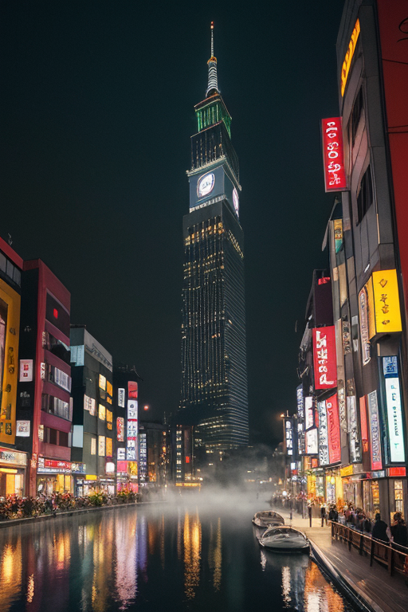
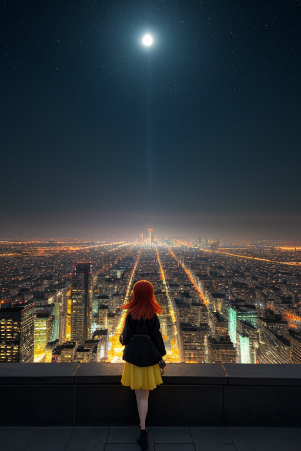
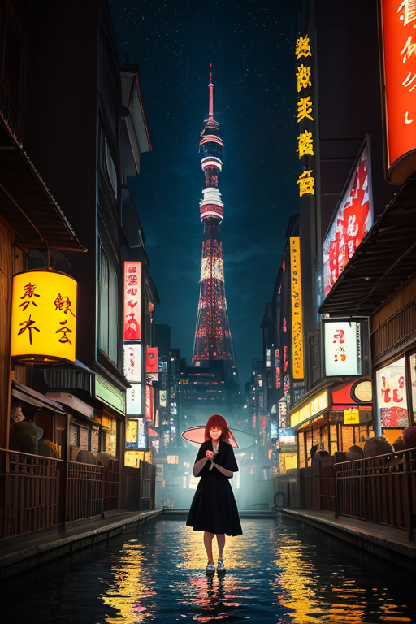

第一章 現実の大阪
あなたはまだ気づいていない。この土地にも、王がいることを。
大阪城天守閣の最上階は、午前六時、まだ誰もいない時間には深い静寂に包まれていた。堀の水は鏡のように淀みなく、石垣の巨大な石一つ一つが、四百年の重みを沈黙のうちに抱えている。ここは、大坂の陣で灰燼に帰した城の上に、再建され、また再建された場所だ。笑いと喧噪の街の、この一点だけが、常に祈りのような静けさを保っている。
その石垣の影に、一人の男が立っていた。オオサカリア・リベル、この地の王である。彼は普段、陽気で機転の利く商人のような笑顔を湛えているが、今、その表情は水のように静かだった。彼の目は、見えない地盤の「歪み」を見つめている。微細なストレスが岩盤に蓄積される音を、彼だけが聞いていた。
「王様、今日も調整を？」
背後から、妖精リベルタの声がした。彼女の声はいつもより低く、この場所の空気を乱さないように配慮されていた。
リベルは頷いた。
「大きな歪みはない。だが、無数に小さな軋みが…この土地の、あまりにも濃い『感情』が、地盤に染み込んでいる」
商人の駆け引き、舞台の緊張、観客の熱狂、そして絶え間ない笑い。それらすべてのエネルギーが、この土地の基盤を、目に見えない形で圧し続けていた。
リベルはそっと手をかざした。何も起こらない。ただ、石垣の一番奥深くから聞こえる、かすかな軋みの音が、ほんの少し、和らいだだけだ。
彼は思う。この地の人々が盾のように、いや、時には武器のように振るう「笑い」。その膨大なエネルギーが、逆に土地を疲弊させはしないか。彼の調整は、今日も、誰にも知られることなく、静かに完了した。

第二章 歪みの兆候
道頓堀の川面は、ネオンの光を静かに飲み込んでいた。歓声と笑いが絶えない街の下で、リベルは微かな違和感を覚えていた。人々が放つ「笑い」のエネルギーは、確かに怒気を分散し、歪みを和らげる。しかし、そのエネルギー自体が、あまりに濃密で、時に鋭すぎるのではないか。
大阪城公園。ベンチに座るリベルに、妖精リベルタが寄り添う。「王様、今日もみんな、よく笑ってますねえ」。彼女の声は明るいが、リベルの目は、石垣の継ぎ目にわずかに生じた、髪の毛ほどの隙間を見つめていた。これは物理的な亀裂ではない。土地が、過剰な感情の密度に、かすかに喘いでいる痕跡だ。
笑いは盾として人を守る。だが、時にそれは、現実から目を背けるための武器にもなる。その両義性が、この土地の基盤に、目に見えない負荷をかけ続けている。リベルはそっと息を吐いた。調整は続く。ただ、彼の心に、一抹の疑問がよぎった。この「笑い」という祈りは、いったい何に向けられているのだろう。
第三章 王の葛藤
大阪城天守閣の最上階。窓の外には、無数の光が静かに瞬く街が広がっていた。リベルはその喧騒を一切遮断したこの場所で、ただ一人、己の内面と向き合っていた。
掌をかざす。微かな、黄金の粒子が舞う。これが「笑い」の力の実体だ。人々の不安を和らげ、怒りを分散し、悲しみを薄める。確かにそれは盾として機能する。しかし、リベルは知っていた。この街の歴史が、その盾を時に鋭い刃として振るってきたことを。商いの駆け引き、逆境を笑い飛ばす強さ、それらは生き延びるための武器でもあった。
「武器か、盾か」
呟く声は、石壁に吸い込まれて消えた。彼の内側で、二つの性質が静かにせめぎ合う。感情を持たぬ存在として派遣されたはずの自分が、今、この問いに苛まれている。それは、この土地の過剰なまでの「情」が、彼という器に滲み込み、変質を促している証だった。
彼は目を閉じた。道頓堀の喧噪、新世界の雑踏、路地裏の人情…。すべてが「笑い」という一つの祈りに集約されるこの街で、王はただ、その祈りの重みに、そっと寄り添うしかないのだと、静かに覚悟を決めた。

第四章 妖精との対話
通天閣の展望台は、夜の帳が下りた頃、最も静かになる。地上の喧噪は遠く、ただ風の音だけが聞こえる。リベルタは、鉄骨の縁に腰を下ろし、足をぶらぶらさせていた。
「王様、あんた、ずっと考え込んでるやろ」
彼女の声は、昼間の陽気さを抜き、澄んでいた。
「この街の笑いはな、武器でも盾でもない。『息』やと思うねん」
彼女は、眼下に広がる新世界のネオンを指さした。
「武器やったら、誰かを傷つける。盾やったら、自分を守るだけ。でもこの街の『笑い』は、ただ『息づいて』るだけや。苦しい時も、悲しい時も、腹立つ時も、一度、深く吐き出して、また吸い込む。それだけのことが、ここでは全部、笑いの形になる」
王は黙って聞いていた。妖精の言葉は、祈りそのもののようだった。
「地震の歪みを調整するみたいに、心の歪みも、少しだけなだめる。それでええねん。全部を解決せんでも。全部を笑いで覆わんでも。ただ、『息』が続くように、そっと手を添える。それが、この王国の、この街の、祈りやと思う」
風が一陣、彼らを通り過ぎた。その風は、確かに、どこかで聞いた笑い声の残響を運んでいるようだった。

第五章「微調整と余韻」
道頓堀の川面は、夜の喧騒をすべて吸い込み、深い静寂をたたえていた。王は川沿いに佇み、目を閉じた。彼の内側では、街の感情の波が、揺れ動く歪みの地図のように広がっている。焦り、悲しみ、怒り。それらは、地震の前に生じる地殻のひずみに似ていた。
彼は笑いを、盾として用いた。武器のように外へ向けて発射するのではなく、内側からそっと包み込む膜として。妖精たちが集めた「笑いの息」は、目に見えない精神波となり、街の感情の密度を微調整していく。大きな悲しみを消すことはできない。ただ、その重みが、ほんの一瞬、風に揺れる柳のようにしなる余地を作るだけだ。
通天閣のネオンが静かに灯る。新世界の路地裏から、かすかな笑い声が風に乗る。それは祈りに等しい。すべてを解決するためのものではなく、ただ「続いていく」ための、ささやかな支え。
彼は目を開けた。街は変わらず、ざわめいていた。何も変わっていないように見える。ただ、ほんの少し、息づきが楽になったような、そんな気がした。
あなたの町にも、王がいる。